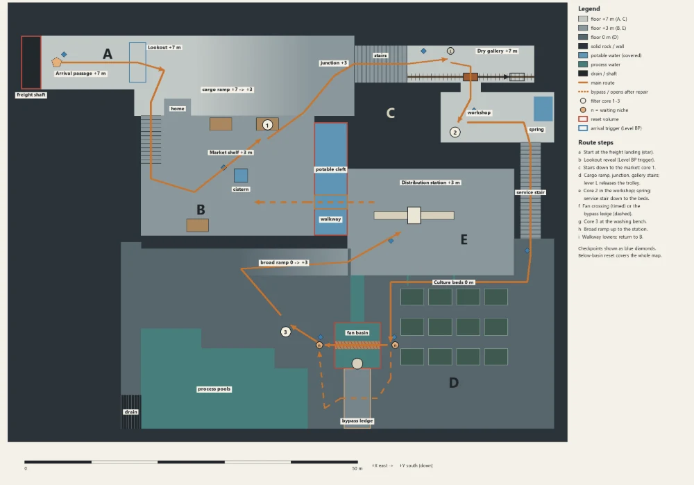
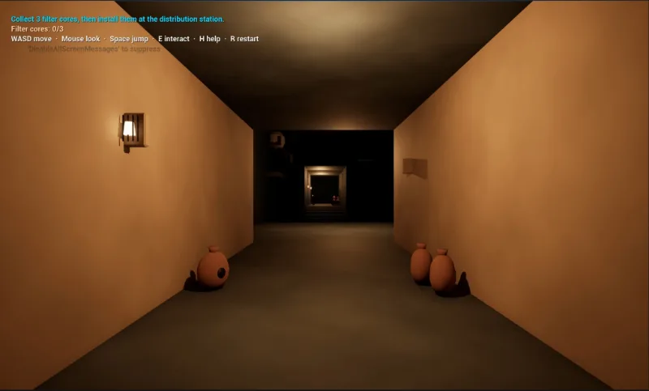
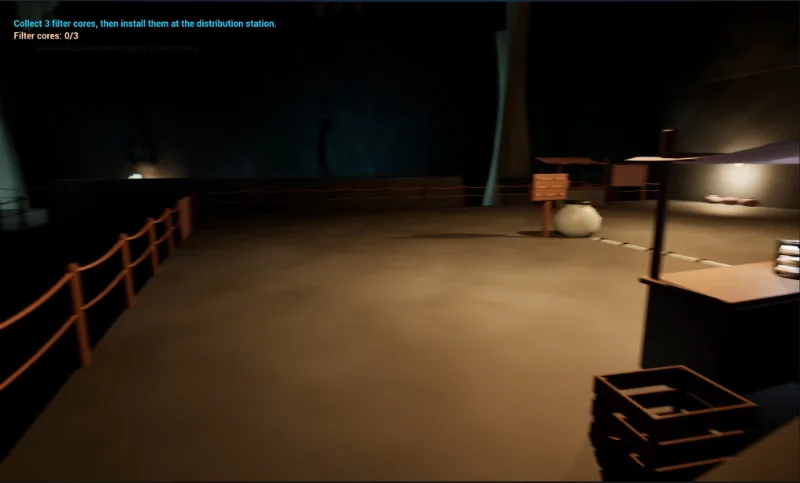
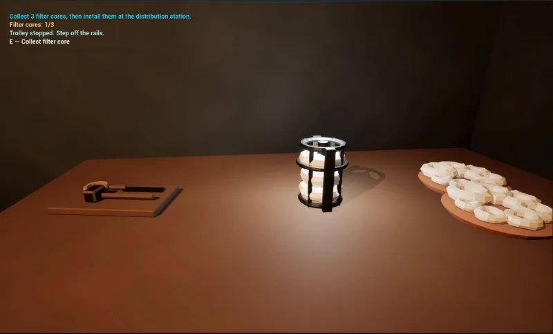
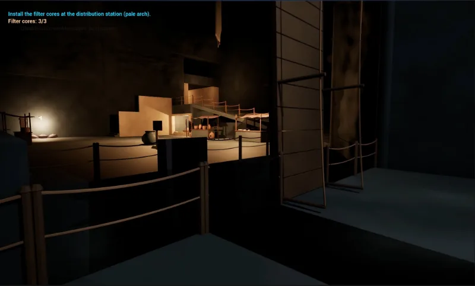
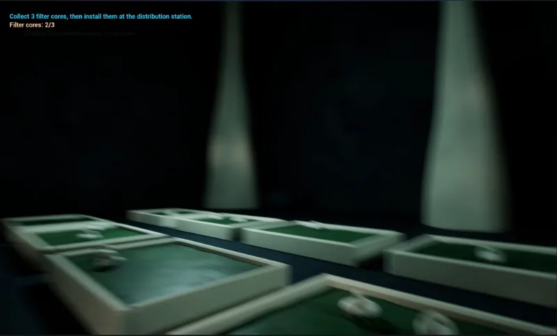
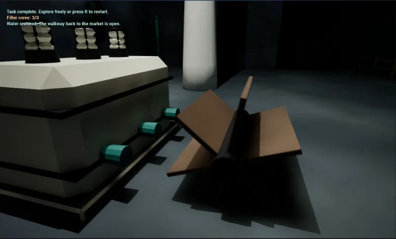

Work / The Cores
The Cores
Level design study. A short first-person level: find three filter cores and bring them to the station to get the water running again.
- Type
- Midterm, team project with classmates
- Engine
- Unreal Engine, using our capstone assets
- Controls
- WASD, mouse, Space to jump, E to interact
01
The route
The level starts and ends in warm light.
- 1 · CorridorLamps lead you in
- 2 · MarketFirst core
- 3 · StairsDark transition
- 4 · WaterworksFiltration beds
- 5 · StationInstall the cores
- 6 · MarketBack to the start






02
Goals
Clear objective. The goal and the core count stay on screen the whole time. One key picks up a core.


Contrast. Warm market, cold waterworks. The color change tells you you're somewhere new.




Payoff. The cores go into the station, then the objective sends you back up.


Still rough: the objective text is Unreal's debug output and the stairs are too dark.
03
Credits
Team project with classmates, built from our capstone assets. Shown here for my portfolio. Please don't reuse it.